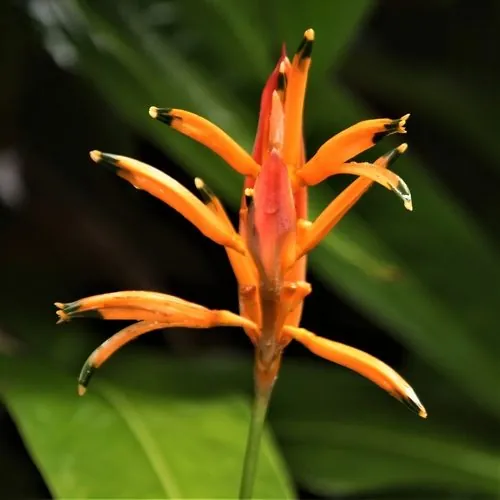

花卉与草本 · 植物界
鸟蕉 Heliconia psittacorum

蝎尾蕉科蝎尾蕉属多年生草本，苞片橙红、尖端带黄绿，形似鹦鹉的喙，是热带地区色彩浓烈的观花植物与切花。
- 分类
- 门被子植物门纲单子叶植物纲目姜目科蝎尾蕉科属蝎尾蕉属
- 栖息环境
- 热带雨林林缘与水边，喜高温高湿、半阴
- 地理分布
- 原产南美北部与加勒比海地区；中国广东、广西、福建、海南、云南、台湾栽培
- 保护级别
- 暂无评估；栽培观赏植物，不涉及保护等级
物种志
鸟蕉为蝎尾蕉科蝎尾蕉属多年生草本，高可达一到两米，具地下根茎，丛生。叶片互生，长椭圆形至披针形，形似芭蕉叶，表面深绿有光泽。花序由数枚舟形苞片组成，苞片橙红色、先端带黄绿色，排列成蝎尾状，形似鹦鹉的喙，花期全年，以夏秋最盛；果实为浆果，成熟时蓝黑色，果期秋冬季。
鸟蕉原产南美洲北部和加勒比海地区，中国广东、广西、福建、海南、云南、台湾等地有栽培。它喜高温高湿和半阴环境，忌强光暴晒和干旱，适宜疏松肥沃、排水良好的土壤，不耐寒。苞片色彩鲜艳、瓶插寿命长，是热带风格花艺中重要的切花材料；丛植于庭院水边也极具观赏性。鸟蕉的花序中含有大量花蜜，常吸引蜂鸟和太阳鸟。
形态与习性
- 株高1–2 m，丛生草本
- 花期全年，夏秋最盛
- 果期秋冬季，浆果蓝黑色
- 光照喜半阴，忌强光暴晒
- 水分喜高湿，忌干旱
- 土壤疏松肥沃、排水良好
- 主要用途热带切花、庭院丛植
趣味知识
- 鸟蕉的橙红色苞片形似鹦鹉的喙，因此英文名意为鹦鹉之花。
- 我们欣赏的鲜艳部分其实是苞片，真正的花藏在苞片之间。
- 鸟蕉的苞片富含花蜜，在原产地常由蜂鸟和太阳鸟传粉。